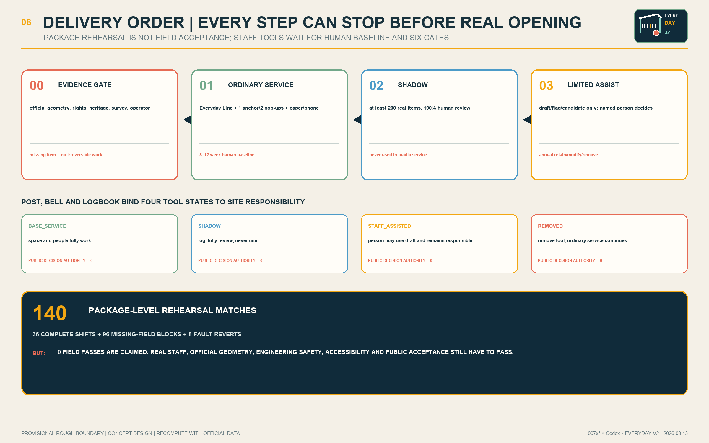

POST
One Post: a named person decides, signs and reopens
Make the city work first. Repair one Everyday Line, then open one anchor and two pop-up rooms; AI stays in the staff back office.
No named duty, physical help or handover evidence means no staff-tool shift. People retain every public decision.
One Post: a named person decides, signs and reopens
One Bell: paper, phone or desk; no app, login or face
One Logbook: opening, stop, repair, handover and reopen are auditable
Overview map · three-level scope · key areas · land-use structure · mobility · blue-green public space · buildings · renewal projects · AI scenarios.
Core metrics · task coverage · self-check status · sources · assumptions. Metrics.json and GeoJSON control all numeric claims.

AI Origin Common Table is preferred, subject to operator, rights, fire, accessibility and official geometry.
Zhongzhiyuan and Dazhongsi open only when site, staff, safety, maintenance and OPEX are confirmed.
24 + 8 + 8 opening hours plus 20% for handover, training and relief; not an approved roster, wage or OPEX.
36 complete shifts are ready for real staff drill; 96 missing-field cases block; 8 faults revert. 140/140 match, but 0 field passes are claimed.


